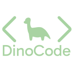
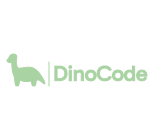
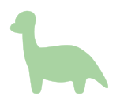

Logo Guidelines
Primary Logo
Our logo is inspired by the dinosaur from The Good Dinosaur — cute, friendly, and simple. We chose this design because it gives Dinocode an approachable and inviting personality. The dinosaur symbolizes curiosity and learning, aligning with our mission to make coding fun and stress-free for everyone.
Logo Variations

Vertical Logo

Primary Logo

Square Logo
Symbolism
Why this logo?
In a world where tech can feel intimidating, our dinosaur mascot brings warmth and charm. It represents a “smart vegetarian dinosaur” — calm, clever, and always eager to grow — just like our users.
Usage Guidelines
Do
- Maintain clear space around the logo
- Use approved color variations
- Maintain aspect ratio when resizing
Don't
- Distort or stretch the logo
- Change logo colors
- Add effects or shadows